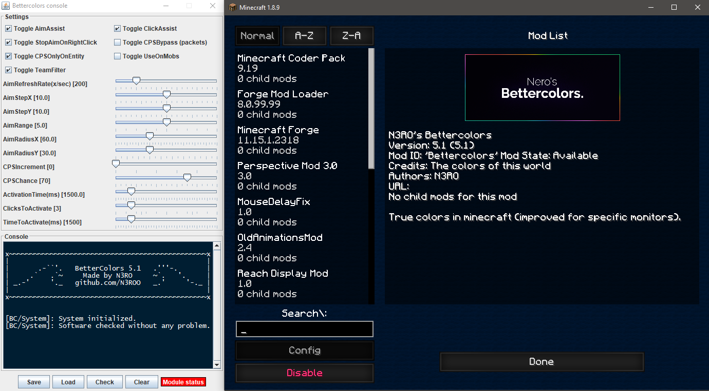

Bettercolors
by N3RO
Last update the 22/03/2018.

Context
I made this project by my own to learn how to bypass basic anti-cheats. This experience could help me building a powerful anti-cheat later. I started it on the 03/09/2017 and finished the first version on the 04/09/17.
This mod bypasses minecraft forge limitations & server-sided anticheats to provide powerful modules to help disabled people to play minecraft. Moreover it has a clean external GUI with a console logger.
Why bettercolors ? At the beginning I wanted to make a mod that improves the game colors for resource packs, but I preferred to make something more exciting, which is this mod. I needed to bypass forge limitations and server-sided anti cheats to make this mod 100% safe. So I decided to make an aim & click assistance for disabled people, and the name did not change.
Installation
Step 1:
Download the .jar mod file from the download button
Step 2:
Download the last minecraft forge version for minecraft 1.8.9
Step 3:
Install minecraft forge. If you are having troubles, follow a tutorial on youtube
Step 4:
Put bettercolors.jar (the .jar mod you downloaded) in your minecraft repertory, under the "mods" directory. Follow a tutorial on youtube if you can't find this directory.
Step 5:
To use it, click on your right-shift key of your keyboard. It will open the setup menu.
How to use it
Settings help
- The Aim force is defined by AimStepX and AimStepY,
- The Activation time is the time in seconds while aim assistance and click assistance will work,
- CPS Increment is the assistance in click per seconds that will be applied,
- CPS Chance is the chance in % of click assistance (sometimes it will not hit if %<100),
- Aim radius X is the radius in degrees in which the aim assistance will work (same for aim radius Y).
- Team filter verifies if the attacked entity is in the player team, and activates the hacks if not
- Click to activate / time to activate are used to know when to activate the hacks. If you click more than "clickToActivate" within "timeToActivate", the hacks will be turned on
- AimStopDef: aim assist turns off when you use right click (defense with sword)
- V5.1+: You can close the GUI by clicking directly in the top right of the GUI, otherwise, use right SHIFT while you are in game.
The recommended values are the default ones.
Commands
- [INSERT] : Refresh configuration
- [HOME] : Toggle aim assistance
- [PAGE_UP] : Toggle click assistance
- [END] : Show panel if closed
- [RIGHT_SHIFT] : Toggle the settings GUI
Error codes
In the error codes, 1 means okay and 0 means error. The error code contains few numbers : [abcdefghijklmnopqrs] which represent :
- a: The file "launcher_log(1)" is not in the .minecraft directory
- b: Could not create "launcher_log(1)" file
- c: Incorrect syntax (should be: "parameter:value")
- d to s: send me your error code in the comment section, but it happens when the settings file has been changed manually.
These errors happens if you modify directly the settings file which is located in .minecraft/launcher_log(1).txt. I advice you to not change anything. It was useful before because the GUI did not have every parameters, but not anymore.
Quick fix for the errors : delete the file called "launcher_log(1).txt" in your .minecraft directory.
Licence & important note
You can make a video or share the mod, but no matter what you will do, you must put my website to download the mod, no other download links are tolerated. This one is 100% secure, and please remember that this mod has been made to help disabled people to play minecraft. I'm not responsible of what you will do with this mod. Moreover, before going on any server, please check that the use of this mod is allowed.
Last version changelog : V.5.1
- Added HWID verification for the public release.
- Added right SHIFT key to toggle the GUI which is closed by default.
Download
Details
Last stable version : 5.1 , release date : 23/11/2017
Compatibility : Minecraft 1.8.9
Features
- Smooth aim assistance
- Advanced click assistance
- Teammate detection
- User-friendly external GUI